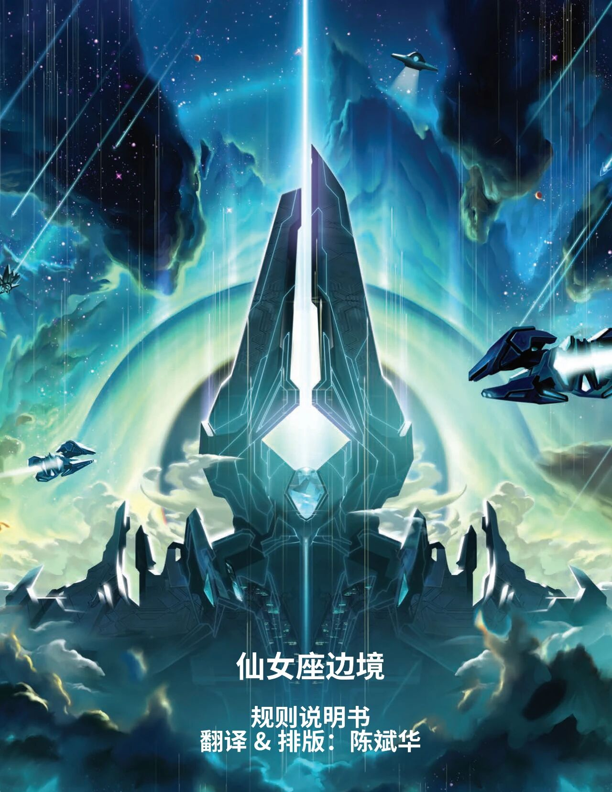
本页整理自《仙女座边境》(Andromeda's Edge,Luke Laurie 设计,Cardboard Alchemy 出版)官方中文规则书(翻译 & 排版:陈斌华),共 28 页扫描图逐页转录,并在对应章节嵌入原书扫描页供对照——点击任意扫描页即可放大查看。内容涵盖介绍与配件、游戏设置、玩家设置、游戏概述与边境的地区、发射回合(发射飞船/激活地区/海盗袭击/战斗)、联盟基地、海盗、返回空间站回合、自由行动、星际飞船、模块、开发、进度轨道、事件轨道、战斗与受损修理、战斗举例、游戏结束与最终计分、可选规则(特殊地区/命运卡/2v2 模式)与图标总表。规则内容归版权方所有,转录仅供个人学习查阅。
整理说明:扫描页经双遍转录并逐项复核,组件清单数量、五条进度轨道数值、计分举例加和链(62→121→145→137→147→163→165)均已核对。原书系统性用词不一致处照录:「运输机/运输船」、「派系/派别」、「进度轨迹区域」(印页 19)混用;印页 11 海盗卡标注「船准」径改为「瞄准」,卡面 "damage 1 of their modules" 及范围「◀1」按放大图径改。原书排印疑点照录未改:印页 9「发射」段末两句重复、印页 4「铺开开放在版图上」、印页 25 计分举例「文明模块」段各分项字面与「+16」总和不符(全链 163/165 自洽)、印页 26 Vortex 引言「病人的血管」(疑为译者笔误)。个别无法确认的字词以〔?〕标注;〔图:…〕〔图标:…〕为版面插图占位说明。
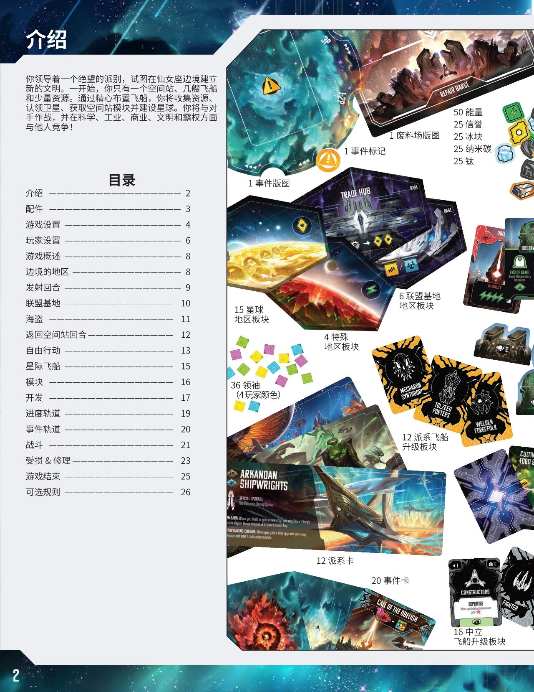
你领导着一个绝望的派别,试图在仙女座边境建立新的文明。一开始,你只有一个空间站、几艘飞船和少量资源。通过精心布置飞船,你将收集资源、认可卫星、获取空间站模块并建设星球。你将与对手作战,并在科学、工业、商业、文明和霸权方面与他人竞争!
| 章节 | 页码 |
|---|---|
| 介绍 | 2 |
| 配件 | 3 |
| 游戏设置 | 4 |
| 玩家设置 | 6 |
| 游戏概述 | 8 |
| 边境的地区 | 8 |
| 发射回合 | 9 |
| 联盟基地 | 10 |
| 海盗 | 11 |
| 返回空间站回合 | 12 |
| 自由行动 | 13 |
| 星际飞船 | 15 |
| 模块 | 16 |
| 开发 | 17 |
| 进度轨道 | 19 |
| 事件轨道 | 20 |
| 战斗 | 21 |
| 受损 & 修理 | 23 |
| 游戏结束 | 25 |
| 可选规则 | 26 |
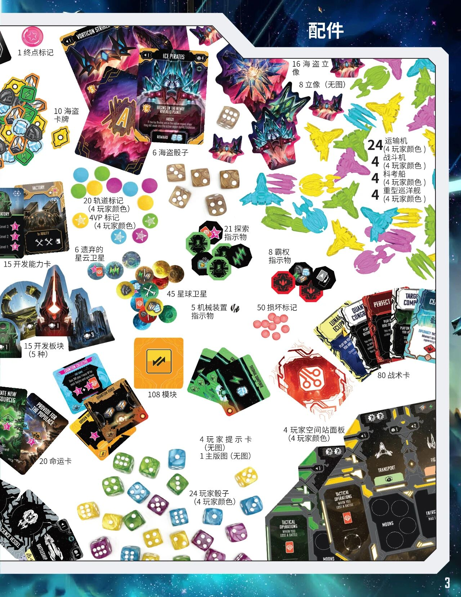
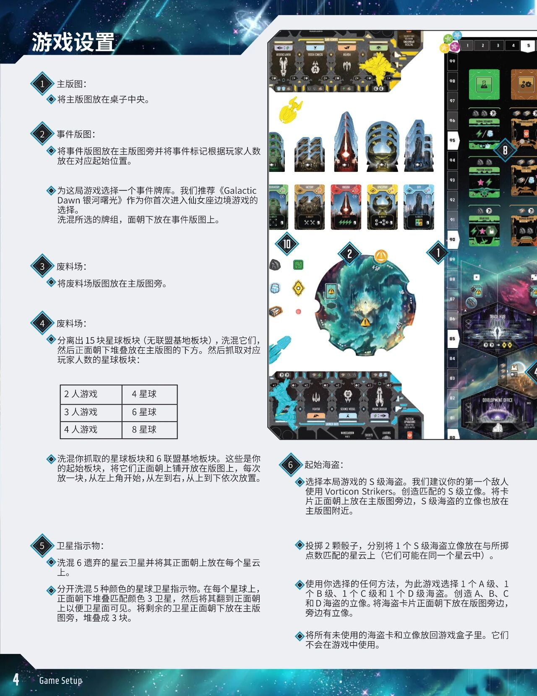
| 玩家人数 | 星球数量 |
|---|---|
| 2 人游戏 | 4 星球 |
| 3 人游戏 | 6 星球 |
| 4 人游戏 | 8 星球 |
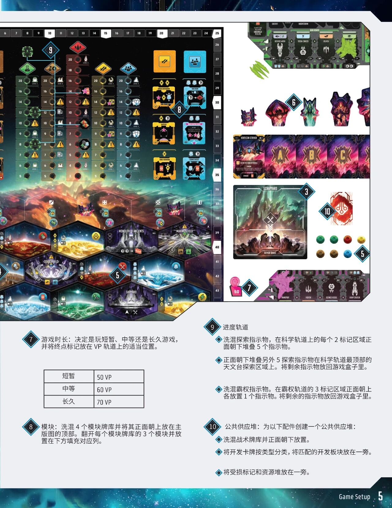
游戏时长:决定是玩短暂、中等还是长久游戏,并将终点标记放在 VP 轨道上的适当位置。
| 游戏时长 | 终点标记 |
|---|---|
| 短暂 | 50 VP |
| 中等 | 60 VP |
| 长久 | 70 VP |
模块:洗混 4 个模块牌库并将其正面朝上放在主版图的顶部。翻开每个模块牌库的 3 个模块并放置在下方填充对应列。
公共供应堆:为以下配件创建一个公共供应堆:
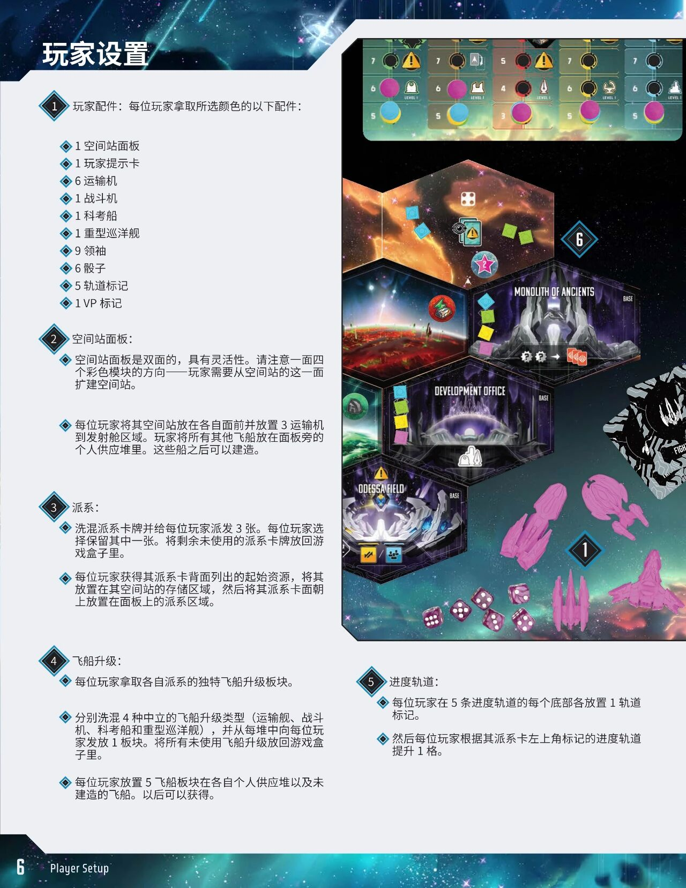
每位玩家拿取所选颜色的以下配件:
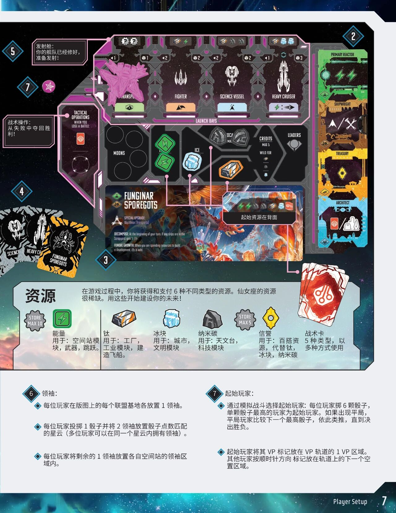
〔图:玩家板块整幅插图,标注 5「发射舱:你的舰队已经修好,准备发射!」、7「战术操作:从失败中夺回胜利!」、阵营卡指引「起始资源在背面」〕
在游戏过程中,你将获得和支付 6 种不同类型的资源。仙女座的资源很稀缺。用这些开始建设你的未来!
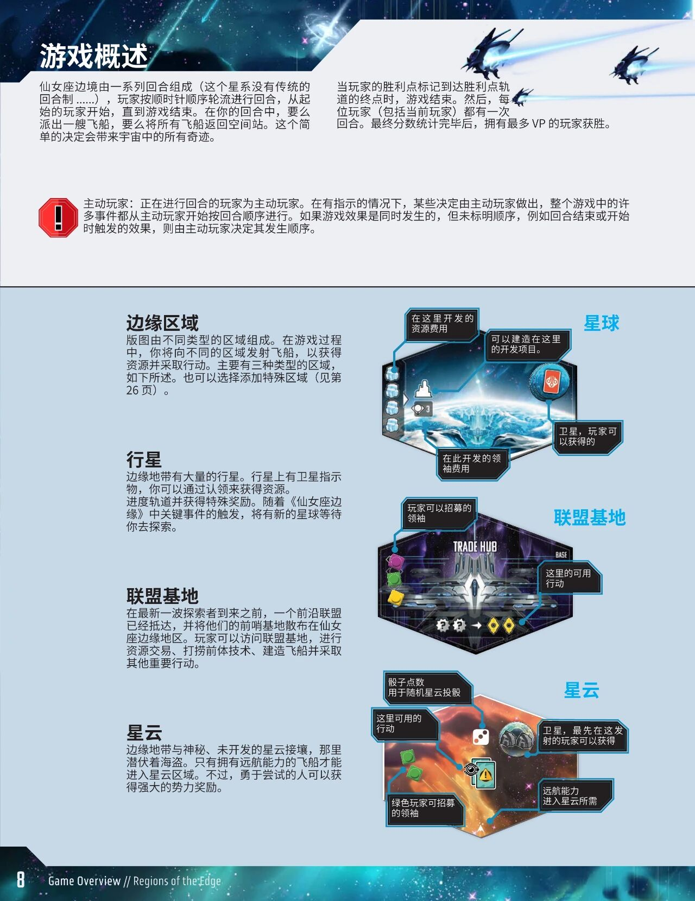
仙女座边境由一系列回合组成(这个星系没有传统回合制……),玩家按顺时针顺序轮流进行回合,从起始的玩家开始,直到游戏结束。在你的回合中,要么派出一艘飞船,要么将所有飞船返回空间站。这个简单的决定会带来宇宙中的所有奇迹。
当玩家的胜利点标记到达胜利点轨道的终点时,游戏结束。然后,每一位玩家(包括当前玩家)都有一次回合。最终分数统计完毕后,拥有最多 VP 的玩家获胜。
〔警示框〕主动玩家:正在进行回合的玩家为主动玩家。在有指示的情况下,某些决定由主动玩家做出,整个游戏中的许多事件都从主动玩家开始按回合顺序进行。如果游戏效果是同时发生的,但未标明顺序,例如回合结束或开始时触发的效果,则由主动玩家决定其发生顺序。
版图由不同类型的区域组成。在游戏过程中,你将向不同的区域发射飞船,以获得资源并采取行动。主要有三种类型的区域,如下所述。你也可以选择添加特殊区域(见第 26 页)。
边缘地带带来大量的行星。行星上有卫星指示物,你可以通过占领来获得资源。加速轨道并获得特殊奖励。随着《仙女座边缘》中关键事件的触发,将有新的星球等待你去探索。
在最新一波探索者到来之前,一个前沿联盟已经抵达,并将他们的前哨基地散布在仙女座边缘地区。玩家可以访问联盟基地,进行资源交易、打捞前体技术、建造飞船并采取其他重要行动。
边缘地带与神秘、未开发的星云接壤,那里潜伏着海盗。只有拥有远航能力的飞船才能进入星云区域。不过,勇于尝试的人可以获得强大的势力奖励。
〔图:三类区域示意图标注——星球:在这里开发的资源费用 / 可以建造在这里的开发项目 / 卫星,玩家可以获得的 / 在此开发的领袖费用;联盟基地:玩家可以招募的领袖 / 这里的可用行动;星云:骰子点数 用于随机星云投掷 / 这里可用的行动 / 卫星,最先在这发射的玩家可以获得 / 绿色玩家可招募的领袖 / 远航能力 进入星云所需〕
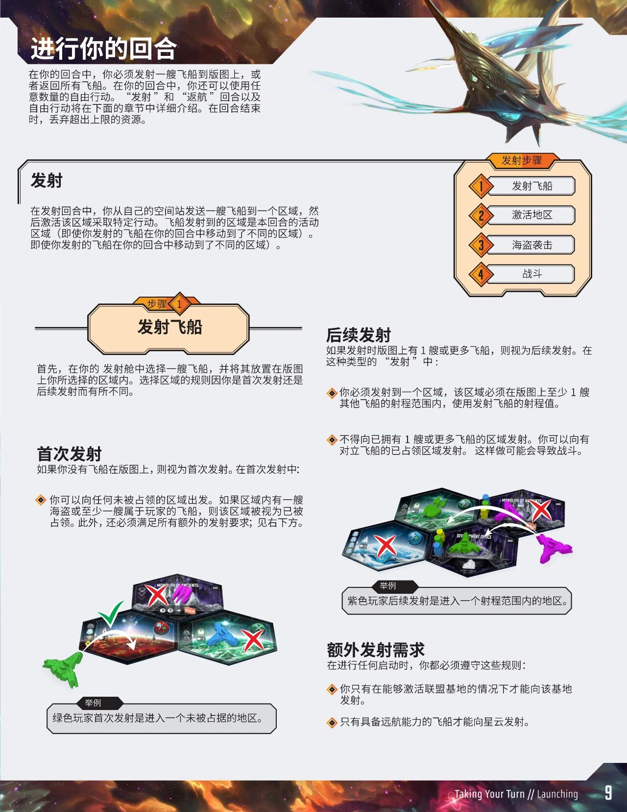
在你的回合中,你必须发射一艘飞船到版图上,或者返回所有飞船。在你的回合中,你还可以使用任意数量的自由行动。"发射"和"返航"回合以及自由行动将在下面的章节中详细介绍。在回合结束时,弃掉超出上限的资源。
在发射回合中,你从自己的空间站发送一艘飞船到一个区域,然后激活该区域或采取特定行动。飞船发射到的区域是本回合的活动区域(即使你的飞船在你的回合中移动到了不同的区域)。即使你发射的飞船在你的回合中移动到了不同的区域)。
〔右侧边栏「发射步骤」:1 发射飞船 → 2 激活地区 → 3 海盗袭击 → 4 战斗〕
首先,在你的发射舱中选择一艘飞船,并将其放置在版图上你所选择的区域内。选择区域的规则因你是首次发射还是后续发射而有所不同。
如果你没有飞船在版图上,则视为首次发射。在首次发射中:
举例:绿色玩家首次发射是进入一个未被占据的地区。
如果发射时版图上有 1 艘或更多飞船,则视为后续发射。在这种类型的"发射"中:
举例:紫色玩家后续发射是进入一个射程范围内的地区。
在进行任何启动时,你都必须遵守这些规则:
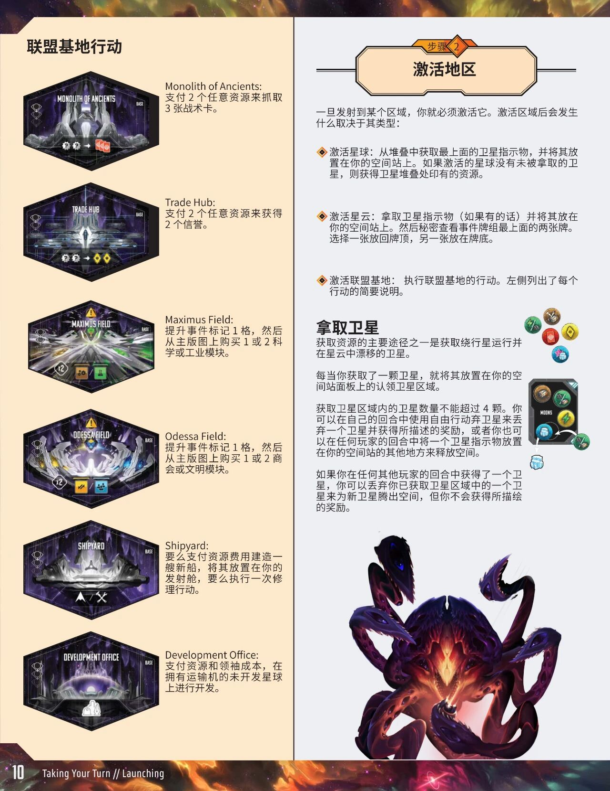
一旦发射到某个区域,你就必须激活它。激活区域后会发生什么取决于其类型:
获取资源的主要途径之一是获取绕行星运行并在星云中漂移的卫星。
每当你获取了一颗卫星,就将其放置在你的空间站面板上的认领卫星区域。
获取卫星区域内的卫星数量不能超过 4 颗。你可以在自己的回合中使用自由行动弃卫星来丢弃一个卫星并获得所描述的奖励,或者你也可以在任何回合中的任何时候将一个卫星指示物放置在你的空间站的其他地方来释放空间。
如果你在任何其他玩家的回合中获得了一个卫星,你可以丢弃你已获取卫星区域中的一个卫星,来为新卫星腾出空间,但你不会获得所描绘的奖励。
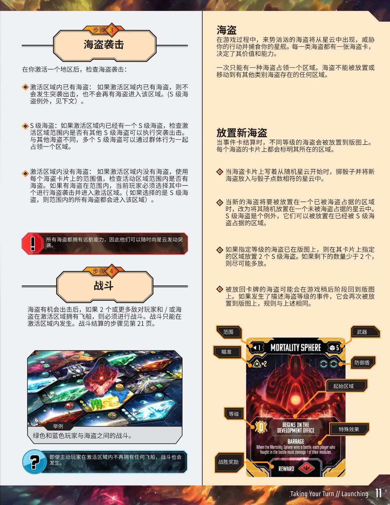
在你激活一个地区后,检查海盗袭击:
〔警示框〕所有海盗都拥有巡航能力,因此他们可以随时向星云发动突袭。
海盗有机会出击后,如果 2 个或更多敌对玩家和/或海盗在激活区域拥有飞船,则必须进行战斗。战斗只能在激活区域内发生。战斗结算的步骤见第 21 页。
举例:绿色和蓝色玩家与海盗之间的战斗。
〔提示框〕即使主动玩家在激活区域内不再拥有任何飞船,战斗也会发生。
在游戏过程中,来势汹汹的海盗将从星云中出现,威胁你的行动并捕食你的星舰。每一类海盗都有一张海盗卡,决定了其价值和能力。
一次只能有一柄海盗占领一个区域。海盗不能被放置或移动到有其他类别海盗存在的任何区域。
当事件卡结算时,不同等级的海盗会被放置到版图上。每个海盗的卡片上都会标明其所在的区域。
〔图:S 级海盗卡「MORTALITY SPHERE」标注——范围(◀1)、武器(骰子 5)、瞄准(+2)、防御盾(双护盾)、起始区域(BEGINS ON THE DEVELOPMENT OFFICE)、等级(D)、特殊效果(BARRAGE:When the Mortality Sphere wins a battle, each player who fought in the battle must damage 1 of their modules.)、战胜奖励(REWARD,红色菱形霸权图标)〕
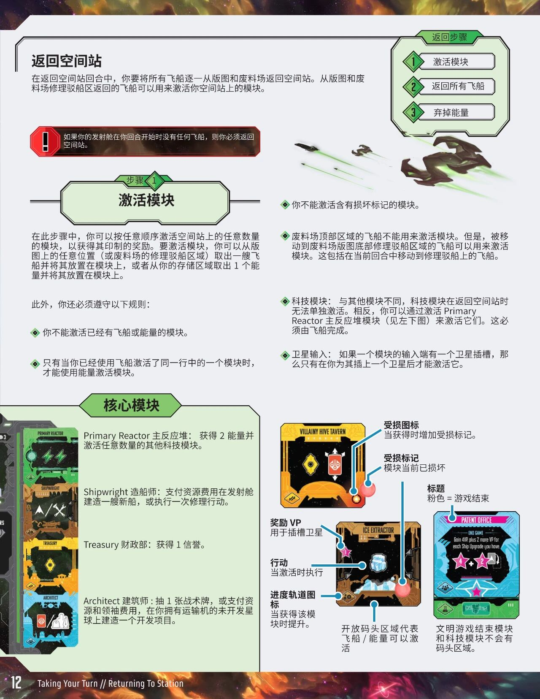
在返回空间站回合中,你要将所有飞船逐一从版图和废料场返回空间站。从版图和废料场修理舱区返回的飞船可以用来激活你空间站上的模块。
〔警示框〕如果你的发射舱在你回合开始时没有任何飞船,则你必须返回空间站。
〔右侧边栏「返回步骤」:1 激活模块 → 2 返回所有飞船 → 3 弃掉能量〕
在此步骤中,你可以按任意顺序激活空间站上的任意数量的模块,以获得其印制的奖励。要激活模块,你可以从版图上的任意位置(或废料场的修理舱区域)取出一艘飞船并将其放置在模块上,或者从你的存储区取出 1 个能量并将其放置在模块上。
此外,你还必须遵守以下规则:
〔图:模块卡结构标注——黄色模块卡 VILLAINY HIVE HAVEN:受损图标(当获得时增加受损标记)、受损标记(模块当已损坏);黑色模块卡 ICE EXTRACTION:奖励 VP(用于插槽卫星)、行动(当激活时执行)、进度轨道图标(当获得该模块时提升)、开放码头区域代表飞船/能量可以激活;蓝色模块卡 PATENT OFFICE(END GAME):标题粉色 = 游戏结束,文明游戏结束模块和科技模块不会有码头区域〕
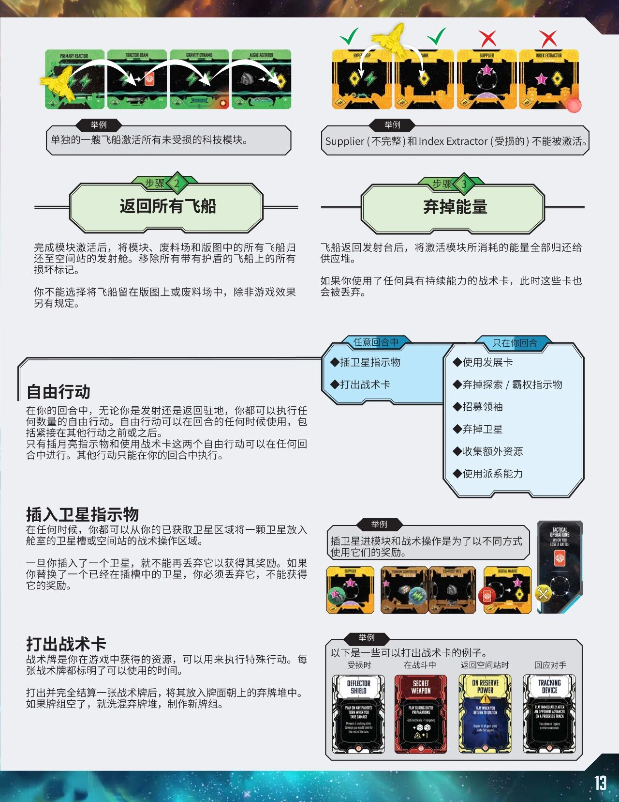
举例:单独的一艘飞船激活所有未受损的科技模块。
举例:Supplier(不完整)和 Index Extractor(受损的)不能被激活。
完成模块激活后,将模块、废料场和版图中的所有飞船归还至空间站的发射舱。移除所有带有护盾的飞船上的所有损坏标记。
你不能选择将飞船留在版图上或废料场中,除非游戏效果另有规定。
飞船返回发射台后,将激活模块所消耗的能量全部归还给供应堆。
如果你使用了任何具有持续能力的战术卡,此时这些卡也会被丢弃。
在你的回合中,无论你是发射还是返回驻地,你都可以执行任何数量的自由行动。自由行动可以在回合的任何时候使用,包括接下来在其它行动之前或之后。
只有插卫星指示物和使用战术卡这两个自由行动可以在任何回合中进行。其他行动只能在你的回合中执行。
| 任意回合中 | 只在你回合 |
|---|---|
|
|
在任何时候,你都可以从你的已获取卫星区域将一颗卫星放入舱室的卫星槽或空间站的战术操作区域。
一旦你放入了一个卫星,就不能再丢弃它以获得其奖励。如果你替换了一个已经在插槽中的卫星,你必须丢弃它,不能获得它的奖励。
举例:插卫星进模块和战术操作是为了以不同方式使用它们的奖励。
战术牌是你在游戏中获得的资源,可以用来执行特殊行动。每张战术牌都标明了可以使用的时间。
打出并完全结算一张战术牌后,将其放入牌面朝上的弃牌堆中。如果牌组空了,就洗弃牌堆,制作新牌组。
〔图:四张战术卡使用时机示例——受损时:DETECTOR SHIELD;在战斗中:SECRET WEAPON;返回空间站时:ON RESERVE POWER;回应对手:TRACKING DEVICE〕
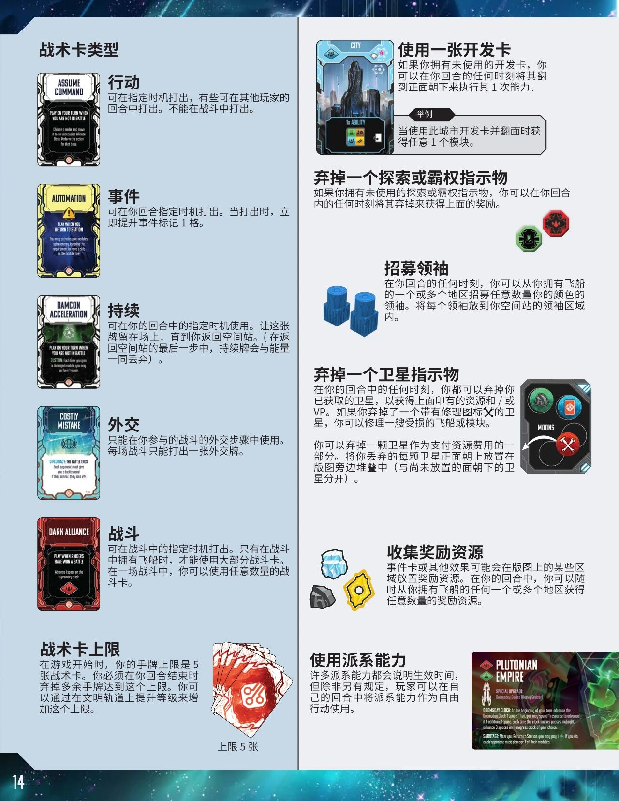
在游戏开始时,你的手牌上限是 5 张战术卡。你必须在你回合结束时弃掉多余牌来达到这个上限。你可以通过在文明轨道上提升等级来增加这个上限。
如果你拥有未使用的开发卡,你可以在你回合的任何时刻将其翻面到正面朝下来执行其 1 次能力。
举例:当使用此城市开发卡翻面时获得任意 1 个模块。
如果你拥有未使用的探索或霸权指示物,你可以在你回合内的任何时刻将其弃掉来获得上面的奖励。
在你回合的任何时刻,你可以从你拥有飞船的一个或多个地区招募任意数量的你的颜色的领袖。将每个领袖放到你空间站的领袖区域内。
在你的回合中的任何时刻,你都可以弃掉你已获取的卫星,以获得上面印有的资源和/或 VP。如果你弃掉了一个带有修理图标的卫星,你可以修理一艘受损的飞船或模块。
你可以弃掉一颗卫星作为支付资源费用的一部分。将你丢弃的每颗卫星正面朝上放置在版图边堆叠中(与尚未放置的面朝下的卫星分开)。
事件卡或其他效果可能会在版图上的某些区域放置奖励资源。在你的回合中,你可以随时从拥有飞船的任一个或多个地区获得任意数量的奖励资源。
许多派系能力都会说明生效时间,但除非另有规定,玩家可以在自己的回合中将派系能力作为自由行动使用。
〔图:派系卡 PLUTONIAN EMPIRE(SPECIAL POWERS)〕
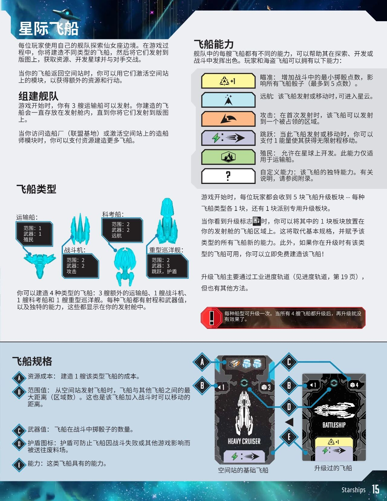
每位玩家使用自己的舰队探索仙女座边境。在游戏过程中,你将建造不同类型的飞船,然后将它们发射到版图上,获取资源、开发星球并与对手交战。
当你的飞船返回空间站时,你可以用它们激活空间站上的模块,以获得额外的资源和行动。
游戏开始时,你有 3 艘运输船可以发射。你建造的飞船会一直存放在发射舱内,直到你将它们发射到版图上。
当你访问造船厂(联盟基地)或激活空间站上的造船师模块时,你可以支付资源建造更多飞船。
| 飞船 | 范围 | 武器 | 能力 |
|---|---|---|---|
| 运输船 | 1 | 1 | 殖民 |
| 科考船 | 2 | 2 | 远航 |
| 战斗机 | 2 | 2 | 攻击 |
| 重型巡洋舰 | 2 | 3 | 跳跃,护盾 |
你可以建造 4 种类型的飞船:3 艘额外的运输船、1 艘战斗机、1 艘科考船和 1 艘重型巡洋舰。每种飞船都有射程和武器值,以及独特的能力,这些都显示在你的发射舱中。
舰队中的每艘飞船都有不同的能力,可以帮助其在探索、开发或战斗中发挥出色。玩家和海盗飞船可以拥有以下能力:
游戏开始时,每位玩家都会收到 5 块飞船升级板块——每种飞船类型各 1 块,还有 1 块派别专用升级板块。
当你看到升级标志时,你可以将其中的 1 块板块放置在你的发射舱的飞船区域上。这将取代基本规格,并赋予该类型的所有飞船新的能力。此外,如果你在升级时有该类型的飞船可用,你可以立即免费建造该飞船!
升级飞船主要通过工业进度轨道(见进度轨道,第 19 页),但也有其他方法。
〔警示框〕每种船型可升级一次。当所有 4 艘飞船都升级后,再升级就没有效果了。
〔图:标注示例——空间站的基础飞船(HEAVY CRUISER:范围 ◀1,武器 3,能力跳跃)与升级过的飞船(BATTLESHIP:范围 ◀1,武器 4,瞄准 +1,能力跳跃)〕
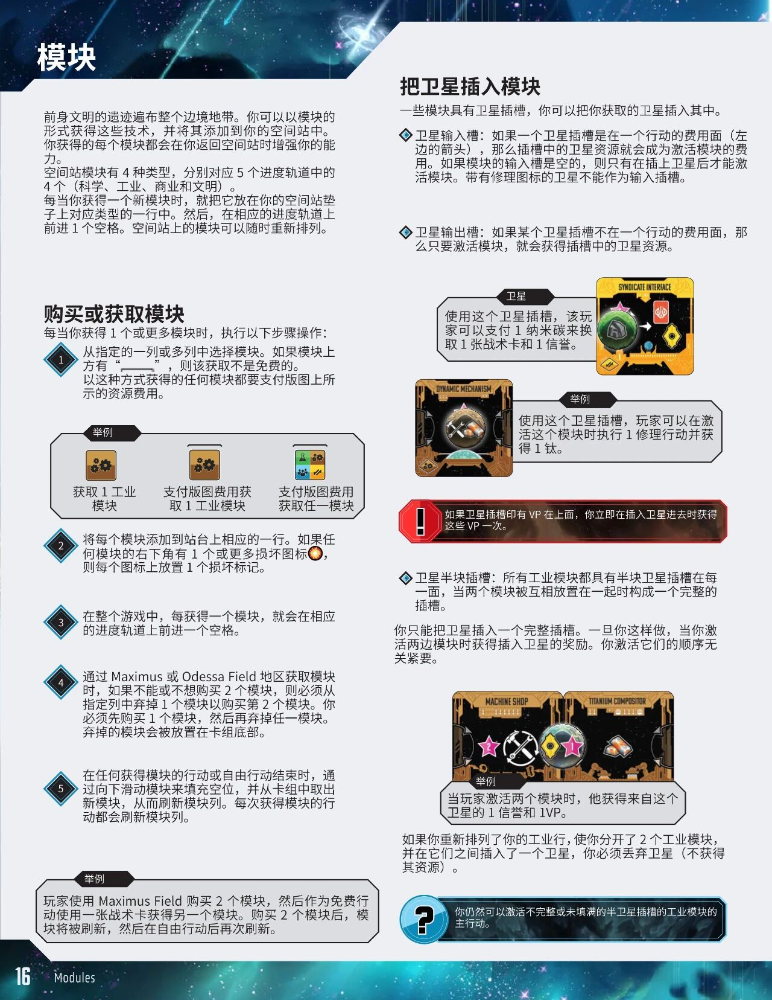
前身文明的遗迹遍布整个边境地带。你可以以模块的形式获得这些技术,并将其添加到你的空间站中。你获得的每个模块都会在你返回空间站时增强你的能力。
空间站模块有 4 种类型,分别对应 5 个进度轨道中的 4 个(科学、工业、商业和文明)。
每当你获得一个新模块时,就把它放在你的空间站垫子上对应类型的一行中。然后,在相应的进度轨道上前进 1 个空格。空间站上的模块可以随时重新排列。
每当你获得 1 个或更多模块时,执行以下步骤操作:
举例:获取 1 工业模块;支付版图费用获取 1 工业模块;支付版图费用获取任一模块。
举例:玩家使用 Maximus Field 购买 2 个模块,然后作为免费行动使用一张战术卡获得另一个模块。购买 2 个模块后,模块将被刷新,然后在自由行动后再次刷新。
一些模块具有卫星插槽,你可以把你获取的卫星插入其中。
〔卫星插槽示例,SYNDICATE INTERFACE〕使用这个卫星插槽,该玩家可以支付 1 纳米碳来换取 1 张战术卡和 1 信誉。
〔举例,DYNAMIC MECHANISM〕使用这个卫星插槽,玩家可以在激活这个模块时执行 1 修理行动并获得 1 钛。
〔警示框〕如果卫星插槽印有 VP 在上面,你立即在插入卫星进去时获得这些 VP 一次。
你只能把卫星插入一个完整插槽。一旦你这样做,当你激活两边模块时获得插入卫星的奖励。你激活它们的顺序无关紧要。
举例(MACHINE SHOP + TITANIUM COMPOSITOR):当玩家激活两个模块时,他获得来自这个卫星的 1 信誉和 1VP。
如果你重新排列了你的工业行,使你分开了 2 个工业模块,并在它们之间插入了一个卫星,你必须丢弃卫星(不获得其资源)。
〔提示框〕你仍然可以激活不完整或未填满的半卫星插槽的工业模块的主行动。
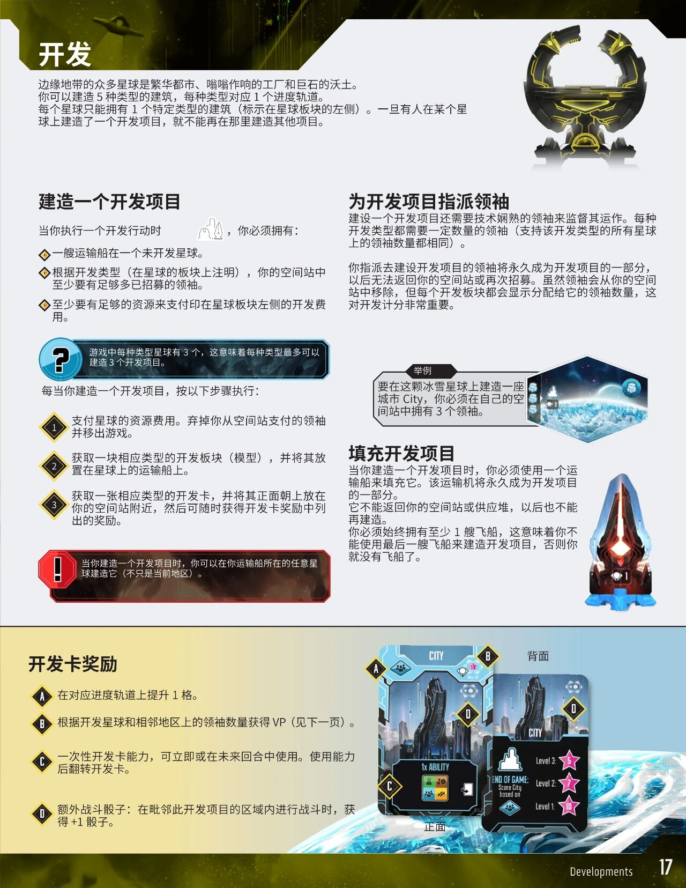
边缘地带的众多星球是繁华都市、嗡嗡作响的工厂和巨大的沃土。你可以建造 5 种类型的建筑,每种类型对应 1 个进度轨道。每个星球只能拥有 1 个特定类型的建筑(标示在星球板块的左侧)。一旦有人在某个星球上建造了一个开发项目,就不能再在那里建造其他项目。
当你执行一个开发行动时,你必须拥有:
〔提示框〕游戏中每种类型星球有 3 个,这意味着每种类型最多可以建造 3 个开发项目。
每当你建造一个开发项目,按以下步骤执行:
〔警示框〕当你建造一个开发项目时,你可以在你运输船所在的任意星球建造它(不只是当前地区)。
建设一个开发项目还需要技术娴熟的领袖来监督其运作。每种开发类型都需要一定数量的领袖(支持该开发类型的所有星球上的领袖数量都相同)。
你指派去建设开发项目的领袖将永久成为开发项目的一部分,以后无法返回你的空间站或再次招募。虽然领袖会从你的空间站中移除,但每个开发板块都会显示分配给它的领袖数量,这对开发计非常重要。
举例:要在这颗冰雪星球上建造一座城市 City,你必须在自己的空间站中拥有 3 个领袖。
当你建造一个开发项目时,你必须使用一个运输船来填充它。该运输机将永久成为开发项目的一部分。
它不能返回你的空间站或供应堆,以后也不能再建造。
你必须始终拥有至少 1 艘飞船,这意味着你不能使用最后一艘飞船来建造开发项目,否则你就没有飞船了。
〔图:开发卡示例(CITY)——正面角标 A/B/D/C 与 1x ABILITY 图标行;背面 END OF GAME、Level 3/2/1 星形计分〕
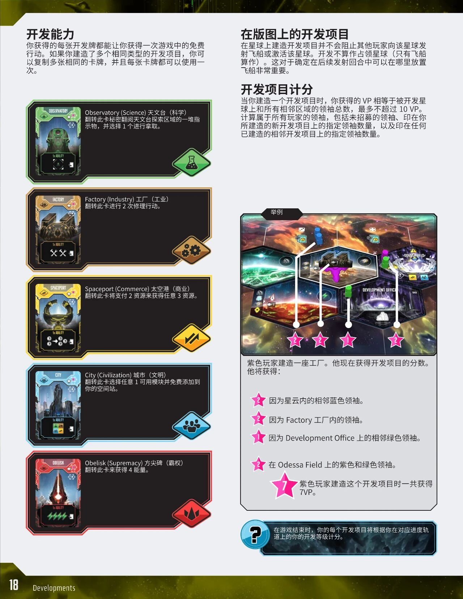
你获得的每张开发牌都能让你获得一次游戏中的免费行动。如果你建造了多个相同类型的开发项目,你可以复制多张相同的卡牌,并且每张卡牌都可以使用一次。
在星球上建造开发项目并不会阻止其他玩家向该星球发射飞船或激活该星球。开发不算占领相邻星球(只有飞船算作)。这对于确定在后续发射回合中可以在哪里放置飞船非常重要。
当你建造一个开发项目时,你获得的 VP 相等于被开发星球上和所有相邻区域的领袖总数,最多不超过 10 VP。计算属于所有玩家的领袖,包括未招募的领袖,包括在你所建造的新开发项目上的指定领袖数量,以及印在任何已建造的相邻开发项目上的指定领袖数量。
举例:紫色玩家建造一座工厂。他现在获得开发项目的分数。他将获得:
- 2VP(星形标 2)——因为星云内的相邻蓝色领袖。
- 2VP——因为 Factory 工厂内的领袖。
- 1VP——因为 Development Office 上的相邻绿色领袖。
- 2VP——在 Odessa Field 上的紫色和绿色领袖。
- 紫色玩家建造这个开发项目时一共获得 7VP。
〔提示框〕在游戏结束时,你的每个开发项目将根据你在对应进度轨道上的你的开发等级计分。
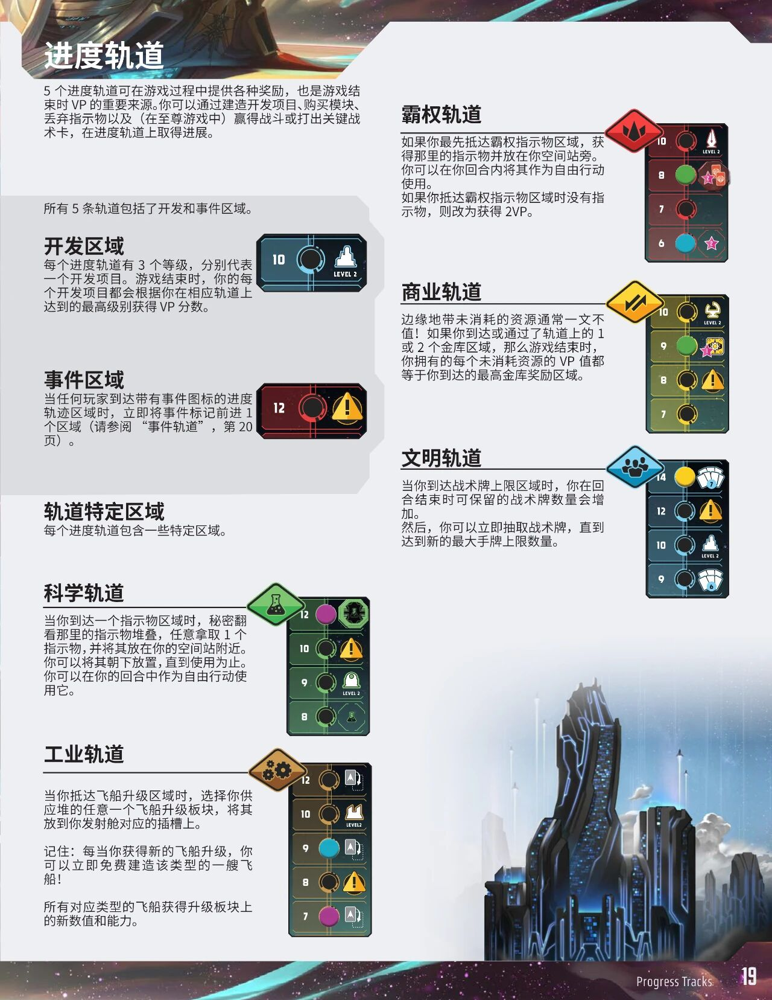
5 个进度轨道可在游戏过程中提供各种奖励,也是游戏结束时 VP 的重要来源。你可以通过建造开发项目、购买模块、丢弃指示物以及(在至尊游戏中)赢得战斗或打出关键战术卡,在进度轨道上取得进展。
所有 5 条轨道包括了开发和事件区域。
每个进度轨道有 3 个等级,分别代表一个开发项目。游戏结束时,你的每个开发项目都会根据你在相应轨道上达到的最高级别获得 VP 分数。
当任何玩家到达带有事件图标的进度轨迹区域时,立即将事件标记前进 1 个区域(请参阅"事件轨道",第 20 页)。
每个进度轨道包含一些特定区域。
当你到达一个指示物区域时,秘密翻看那里的指示物堆叠,任意拿取 1 个指示物,并将其放在你的空间站附近。你可以将其朝下放置,直到使用为止。你可以在你的回合中作为自由行动使用它。
轨道格值(自高而低):12、10、9、8。
当你抵达飞船升级区域时,选择你供应堆的任意一个飞船升级板块,将其放到你发射舱对应的插槽上。
记住:每当你获得新的飞船升级,你可以立即免费建造该类型的一艘飞船!
所有对应类型的飞船获得升级板块上的新数值和能力。
轨道格值(自高而低):12、10、9、8、7。
如果你最先抵达霸权指示物区域,获得那里的指示物并放在你空间站旁。你可以在你回合内将其作为自由行动使用。
如果你抵达霸权指示物区域时没有指示物,则改为获得 2VP。
轨道格值(自高而低):10、8、7、6。
边缘地带未消耗的资源通常一文不值!如果你到达或通过了轨道上的 1 或 2 个金库区域,那么游戏结束时,你拥有的每个未消耗资源的 VP 值都等于你到达的最高金库奖励区域。
轨道格值(自高而低):10、9、8、7。
当你到达战术牌上限区域时,你在回合结束时,可保留的战术牌数量会增加。
然后,你可以立即抽取战术牌,直到达到新的最大手牌上限数量。
轨道格值(自高而低):14、12、10、9。
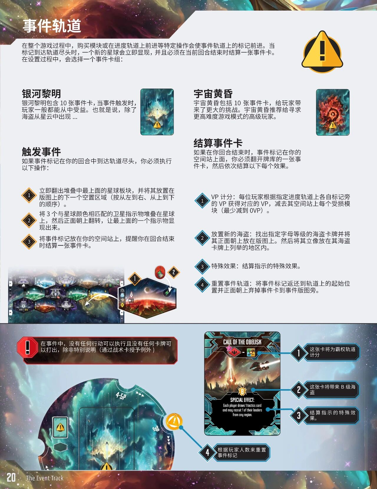
在整个游戏过程中,购买模块或在进度轨道上前进等特定操作会使事件轨道上的标记前进。当标记到达轨道尽头时,一个新的星球会立即显现,并且必须在当前回合结束时结算一张事件卡。在设置过程中,会选择一个事件卡组:
银河黎明包含 10 张事件卡,当事件触发时,玩家一般都能从中受益。也就是说,除了海盗从星云中出现……
宇宙黄昏包括 10 张事件卡,给玩家带来了更大的挑战。宇宙黄昏推荐给寻求更高难度游戏模式的高级玩家。
如果事件标记在你的回合中到达轨道尽头,你必须执行以下操作:
如果在你回合结束时,事件标记在你的空间站上面,你必须翻开牌库的一张事件卡,然后依次结算以下每个效果。
〔警示框〕在事件中,没有任何行动可以执行且没有任何卡牌可以打出,除非特别说明(通过战术卡授予例外)。
〔图:事件卡示例 CALL OF THE OBELISK——①这张卡将为霸权轨道计分;②这张卡将带来 B 级海盗;③结算指示的特殊效果(SPECIAL EFFECT: Each player draws 1 tactics card and may recruit 1 of their leaders from any region.);④根据玩家人数来重置事件标记(4-5P / 3P)〕
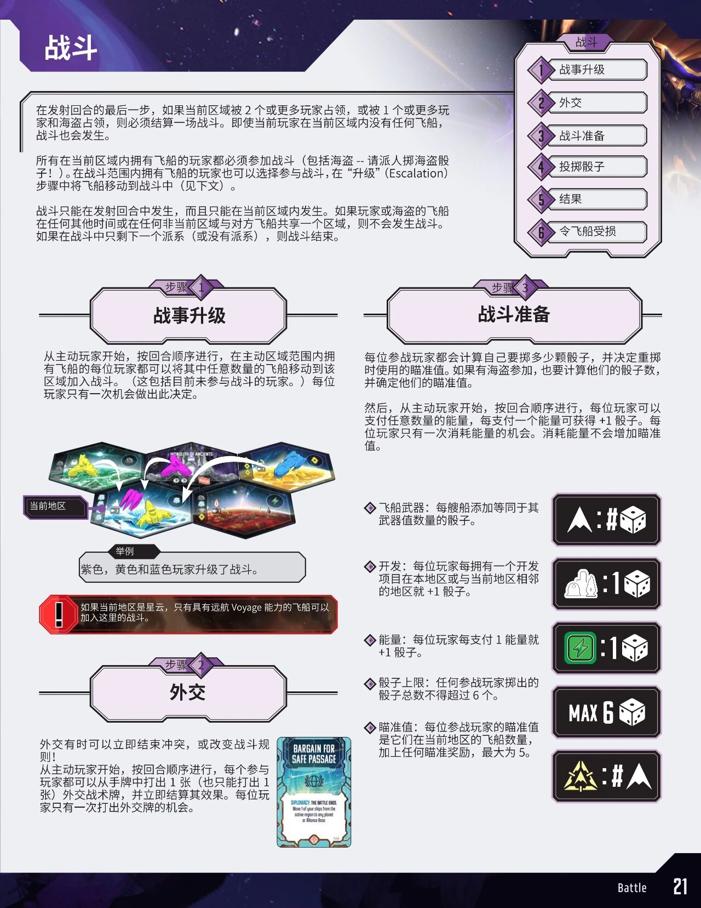
在发射回合的最后一步,如果当前区域被 2 个或更多玩家占领,或被 1 个或更多玩家和海盗占领,则必须结算一场战斗。即使当前玩家在当前区域内没有任何飞船,战斗也会发生。
所有在当前区域内拥有飞船的玩家都必须参加战斗(包括海盗——请派人掷海盗骰子!)。在战斗范围内拥有飞船的玩家也可以选择参与战斗,在"升级"(Escalation)步骤中将飞船移动到战斗中(见下文)。
战斗只能在发射回合中发生,而且只能在当前区域内发生。如果玩家或海盗的飞船在任何其他时间或在任何非当前区域与对方飞船共享一个区域,则不会发生战斗。
如果在战斗中只剩下一个派系(或没有派系),则战斗结束。
〔右侧边栏「战斗」六步:1 战事升级 → 2 外交 → 3 战斗准备 → 4 投掷骰子 → 5 结果 → 6 令飞船受损〕
从主动玩家开始,按回合顺序进行,在主动区域范围内拥有飞船的每位玩家都可以将其中任意数量的飞船移动到该区域加入战斗。(这包括目前未参与战斗的玩家。)每位玩家只有一次机会做出此决定。
举例:紫色,黄色和蓝色玩家升级了战斗。
〔警示框〕如果当前地区是星云,只有具有远航 Voyage 能力的飞船可以加入这里的战斗。
外交有时可以立即结束冲突,或改变战斗规则!
从主动玩家开始,按回合顺序进行,每个参与玩家都可以从手牌中打出 1 张(也只能打出 1 张)外交战术牌,并立刻结算其效果。每位玩家只有一次打出外交牌的机会。
〔图:外交卡 BARGAIN FOR SAFE PASSAGE——DIPLOMACY: THE BATTLE ENDS. Move 1 of your ships from the active region to any planet or Alliance Base.〕
每位参战玩家都会计算自己要掷多少颗骰子,并决定重掷时使用的瞄准值。如果有海盗参加,也要计算他们的骰子数,并确定他们的瞄准值。
然后,从主动玩家开始,按回合顺序进行,每位玩家可以支付任意数量的能量,每支付一个能量可获得 +1 骰子。每位玩家只有一次消耗能量的机会。消耗能量不会增加瞄准值。
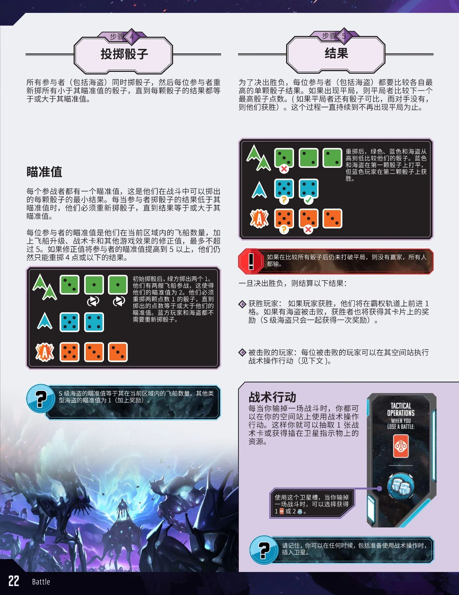
所有参与者(包括海盗)同时掷骰子,然后每位参与者重新掷所有小于其瞄准值的骰子,直到每颗骰子的结果都等于或大于其瞄准值。
每个参战者都有一个瞄准值,这是他们在战斗中可以掷出的每颗骰子的最小结果。每当参与者掷骰子的结果低于其瞄准值时,他们必须重新掷骰子,直到结果等于或大于其瞄准值。
每位参与者的瞄准值是他们在当前区域内的飞船数量,加上飞船升级、战术卡和其他游戏效果的修正值,最多不超过 5。如果修正值将参与者的瞄准值提高到 5 以上,他们仍然只能重掷 4 点或以下的结果。
〔示例〕初始掷骰后,绿方掷出两个 1。他们有两艘飞船参战,这使得他们的瞄准值为 2。他们必须重掷两颗点数 1 的骰子,直到掷出的点数等于或大于他们的瞄准值。蓝方玩家和海盗都不需要重新掷骰子。
〔提示框〕S 级海盗的瞄准值等于其在当前区域内的飞船数量。其他类型海盗的瞄准值为 1(加上奖励)。
为了决出胜负,每位参与者(包括海盗)都要比较各自最高的单颗骰子结果。如果出现平局,则平局者比较下一个最高骰子点数。(如果平局者还有骰子可比,而对手没有,则他们获胜)。这个过程一直持续到不再出现平局为止。
〔示例〕重掷后,绿色、蓝色和海盗从高到低比较他们的骰子。蓝色和海盗在第一颗骰子上打平,但蓝色玩家在第二颗骰子上获胜。
〔警示框〕如果在比较所有骰子后仍未打破平局,则没有赢家,所有人都输。
一旦决出胜负,则结算以下结果:
每当你输掉一场战斗时,你都可以在你的空间站上使用战术操作行动。这样你就可以抽取 1 张战术卡或获得插在卫星指示物上的资源。
〔图:TACTICAL OPERATIONS(WHEN YOU LOSE A BATTLE)——使用这个卫星槽,当你输掉一场战斗时,可以选择获得 1 张战术卡或 2 个插槽资源〕
〔提示框〕请记住,你可以在任何时候,包括准备使用战术操作时,插入卫星。
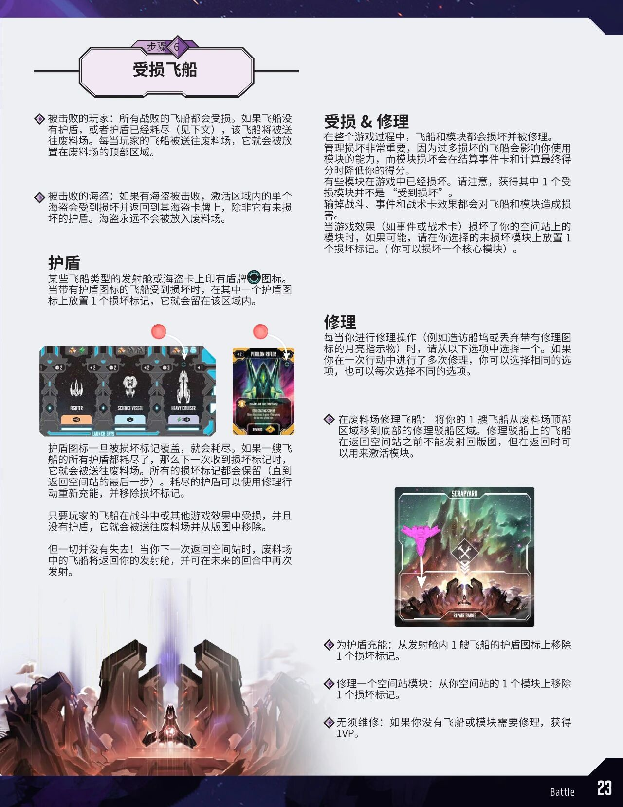
某些飞船类型的发射舱或海盗卡上印有盾牌图标。当带有护盾图标的飞船受到损坏时,在其中一个护盾图标上放置 1 个损坏标记,它就会留在该区域内。
护盾图标一旦被损坏标记覆盖,就会耗尽。如果一艘飞船的所有护盾都耗尽了,那么下一次收到损坏标记时,它就会被送往废料场。所有的损坏标记都会保留(直到返回空间站的最后一步)。耗尽的护盾可以使用修理行动重新充能,并移除损坏标记。
只要玩家的飞船在战斗中或其他游戏效果中受损,并且没有护盾,它就会被送往废料场并从版图中移除。
但一切并没有失去!当你下一次返回空间站时,废料场中的飞船将返回你的发射舱,并可在未来的回合中再次发射。
在整个游戏过程中,飞船和模块都会损坏并被修理。管理损坏非常重要,因为过多损坏的飞船会影响你使用模块的能力,而模块损坏会在结算事件卡和计算最终得分时降低你的得分。
有些模块在游戏中已经损坏。请注意,获得其中 1 个受损模块并不是"受到损坏"。
输掉战斗、事件和战术卡效果都会对飞船和模块造成损害。
当游戏效果(如事件或战术卡)损坏了你的空间站上的模块时,如果可能,请在你选择的未损坏模块上放置 1 个损坏标记。(你可以损坏一个核心模块)。
每当你进行修理操作(例如造访船坞或丢弃带有修理图标的月亮指示物)时,请从以下选项中选择一个。如果你在一次行动中进行了多次修理,你可以选择相同的选项,也可以每次选择不同的选项。
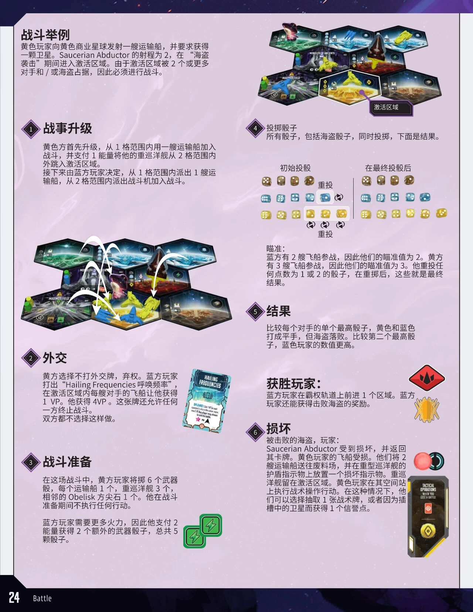
黄色玩家向黄色商业星球发射一艘运输船,并要求获得一颗卫星。Saucerian Abductor 的射程为 2,在"海盗袭击"期间进入激活区域。由于激活区域被 2 个或更多对手和/或海盗占据,因此必须进行战斗。
黄色方首先升级,从 1 格范围内用一艘运输船加入战斗,并支付 1 能量将他的重巡洋舰从 2 格范围内外跳入激活区域。
接下来由蓝方玩家决定,从 1 格范围内派出 1 艘运输船,从 2 格范围内派出战斗机加入战斗。
黄方选择不打外交牌,弃权。蓝方玩家打出"Hailing Frequencies 呼唤频率",在激活区域内每艘对手的飞船让他获得 1 VP。他获得 4VP。这张牌还允许任何一方终止战斗。
双方都不选择这样做。
在这场战斗中,黄方玩家将掷 6 个武器骰,每个运输船 1 个,重巡洋舰 3 个,相邻的 Obelisk 方尖石 1 个。他在战斗准备期间不执行任何行动。
蓝方玩家需要更多火力,因此他支付 2 能量获得 2 个额外的武器骰子,总共 5 颗骰子。
所有骰子,包括海盗骰子,同时投掷,下面是结果。
瞄准:
蓝方有 2 艘飞船参战,因此他们的瞄准值为 2。黄方有 3 艘飞船参战,因此他们的瞄准值为 3。他重投任何点数为 1 或 2 的骰子,在重掷后,这些就是最终结果。
比较每个对手的单个最高骰子,黄色和蓝色打成平手,但海盗落败。比较第二个最高骰子,蓝色玩家的数值更高。
蓝方玩家在霸权轨道上前进 1 个区域。蓝方玩家还能获得击败海盗的奖励。
被击败的海盗,玩家:
Saucerian Abductor 受到损坏,并返回其卡牌。黄色玩家的飞船受损。他们将 2 艘运输船送往废料场,并在重型巡洋舰的护盾指示物上放置一个损坏指示物。重巡洋舰留在激活区域。黄色玩家在其空间站上执行战术操作行动。在这种情况下,他们可以选择抽取 1 张战术牌,或者因为插槽中的卫星而获得 1 个信誉点。
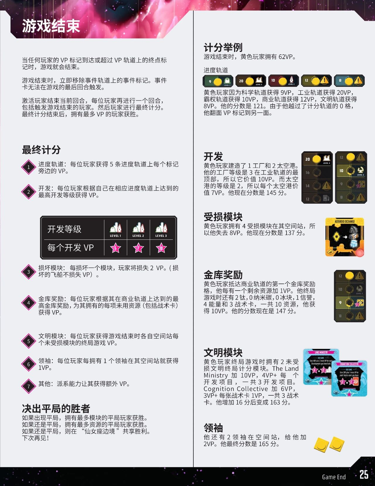
当任何玩家的 VP 标记到达或超过 VP 轨道上的终点标记时,游戏就会结束。
游戏结束时,立即移除事件轨道上的事件标记。事件卡无法在游戏的最后回合触发。
激活玩家结束当前回合后,每位玩家再进行一个回合,包括触发游戏结束的玩家。然后玩家进行最终计分。最终计分结束后,拥有最多 VP 的玩家获胜。
| 开发等级 | LEVEL 1 | LEVEL 2 | LEVEL 3 |
|---|---|---|---|
| 每个开发 VP | ★1 | ★2 | ★4 |
如果出现平局,拥有最多模块的平局玩家获胜。
如果还是平局,拥有最多资源的平局玩家获胜。
如果还是平局,则在"仙女座边境"共享胜利。
下次再见!
游戏结束时,黄色玩家拥有 62VP。
进度轨道:黄色玩家因为科学轨道获得 9VP,工业轨道获得 20VP,霸权轨道获得 10VP,商业轨道获得 12VP,文明轨道获得 8VP。他的分数是 121。由于他越过了计分轨道的 0 格,他翻转 VP 标记到另一面。
开发:黄色玩家建造了 1 工厂和 2 太空港。他的工厂等级是 3 在工业轨道的最顶部,所以它价值 10VP。而太空港的等级是 2,所以每个太空港价值 7VP。他现在分数是 145 分。
受损模块:黄色玩家拥有 4 受损模块在其空间站,所以他失去 8VP。他现在分数是 137 分。
金库奖励:黄色玩家抵达商业轨道的第一个金库奖励格,他每有一个剩余资源加 1VP。他终局游戏时还有 2 钛,0 纳米碳,0 冰块,1 信誉,4 能量和 3 战术卡,一共 10 资源,他获得 10VP。他的分数现在是 147 分。
文明模块:黄色玩家终局游戏时拥有 2 未受损的文明终局计分模块,The Land Ministry 加 10VP,4VP+ 每个开发项目,一共 3 开发项目。Cognition Collective 加 6VP,3VP+ 每张战术卡 1VP,一共 3 战术卡。他增加 16 分后变成 163 分。
领袖:他还有 2 领袖在空间站,给他加 2VP。他最终分数是 165 分。
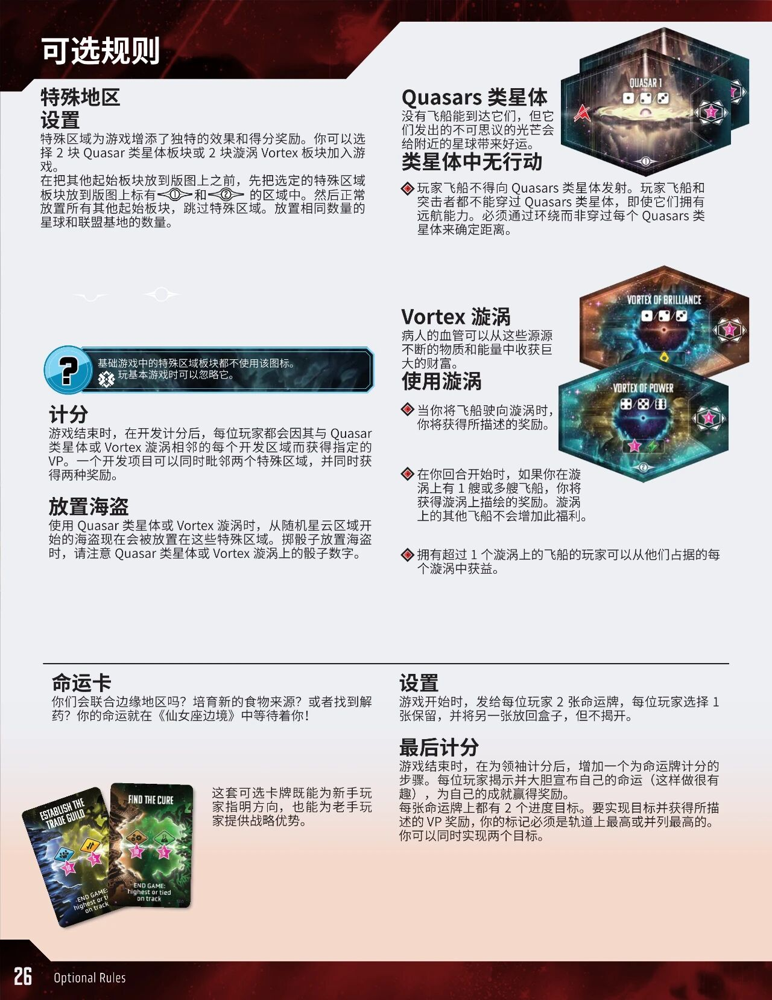
特殊区块为游戏增添了独特的效果和得分奖励。你可以选择 2 块 Quasar 类星体板块或 2 块漩涡 Vortex 板块加入游戏。
在把其他起始板块放到版图上之前,先把选定的特殊区域板块放到版图上标有特殊区域标记的区域中。然后正常放置所有其他起始板块,跳过特殊区域。放置相同数量的星球和联盟基地的数量。
〔警示框〕基础游戏中的特殊区域板块都不使用该图标。玩基本游戏时可以忽略它。
游戏结束时,在开发计分后,每位玩家都会因其与 Quasar 类星体或 Vortex 漩涡相邻的每个开发区域而获得指定的 VP。一个开发项目可以同时毗邻两个特殊区域,并同时获得两种奖励。
使用 Quasar 类星体或 Vortex 漩涡时,从随机星云区域开始的海盗现在会被放置在这些特殊区域,掷骰子放置海盗时,请注意 Quasar 类星体或 Vortex 漩涡上的骰子数字。
没有飞船能到达它们,它们发出的不可思议的光芒会给附近的星球带来好运。
病人的血管〔?〕可以从这些源源不断的物质和能量中收获巨大的财富。
〔图:VORTEX OF BRILLIANCE 与 VORTEX OF POWER 两块板块,各印骰子点数、星形 VP 与奖励图标〕
你们会联合边缘地区吗?培育新的食物来源?或者找到解药?你的命运就在《仙女座边境》中等待着!
这套可选卡既能为新手玩家指明方向,也能为老手玩家提供战略优势。
游戏开始时,发给每位玩家 2 张命运牌,每位玩家选择 1 张保留,并将另一张放回盒子,但不揭开。
游戏结束时,在为领袖计分后,增加一个为命运牌计分的步骤。每位玩家揭示并大胆宣布自己的命运(这样做很有趣),为自己的成就赢得奖励。
每张命运牌上有 2 个进度目标。要实现目标并获得所描述的 VP 奖励,你的标记必须是轨道上最高或并列最高的。你可以同时实现两个目标。
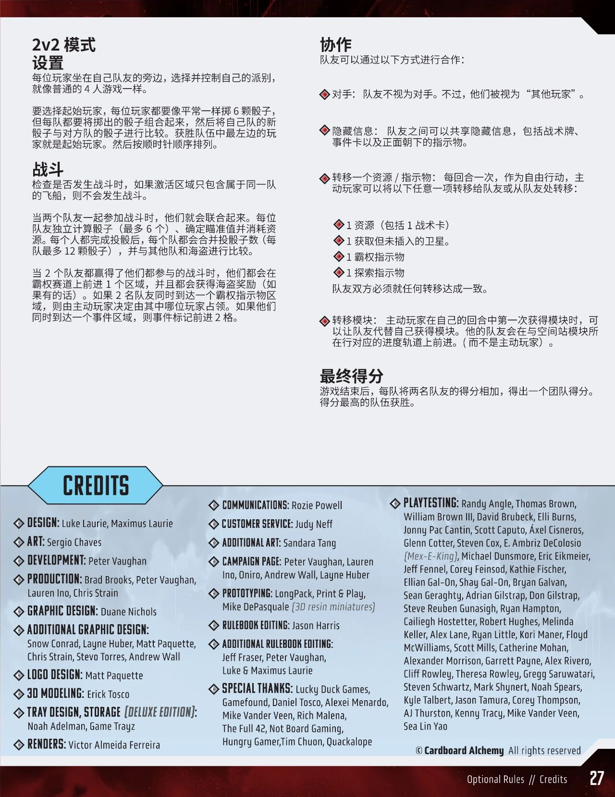
每位玩家坐在自己队友的旁边,选择并控制自己的派系,就像普通的 4 人游戏一样。
要选择起始玩家,每位玩家都要像平常一样掷 6 颗骰子,但每队都要将掷出的骰子组合起来,然后将自己队的新骰子与对方队的骰子进行比较。获胜队伍中最左边的玩家就是起始玩家。然后按顺时针顺序排列。
检查是否发生战斗时,如果激活区域只包含属于同一队的飞船,则不会发生战斗。
当两个队友一起参加战斗时,他们就会联合起来。每位队友独立计算骰子(最多 6 个)、确定瞄准值并消耗资源。每个人都完成投掷后,每个队伍都会合并投掷骰子数(每队最多 12 颗骰子),并与其他队和海盗进行比较。
当 2 个队友都赢了他们的参与和战斗时,他们都会在霸权赛道上前进 1 个区域,并且都会获得海盗奖励(如果有〔?〕话)。如果 2 名队友同时到达一个霸权指示物区域,则由主动玩家决定由其中哪位玩家占领。如果他们同时到达一个事件区域,则事件标记前 2 格。
队友可以通过以下方式进行合作:
队友双方必须就任何转移达成一致。
游戏结束后,每队将两名队友的得分相加,得出一个团队得分。得分最高的队伍获胜。
© Cardboard Alchemy All rights reserved
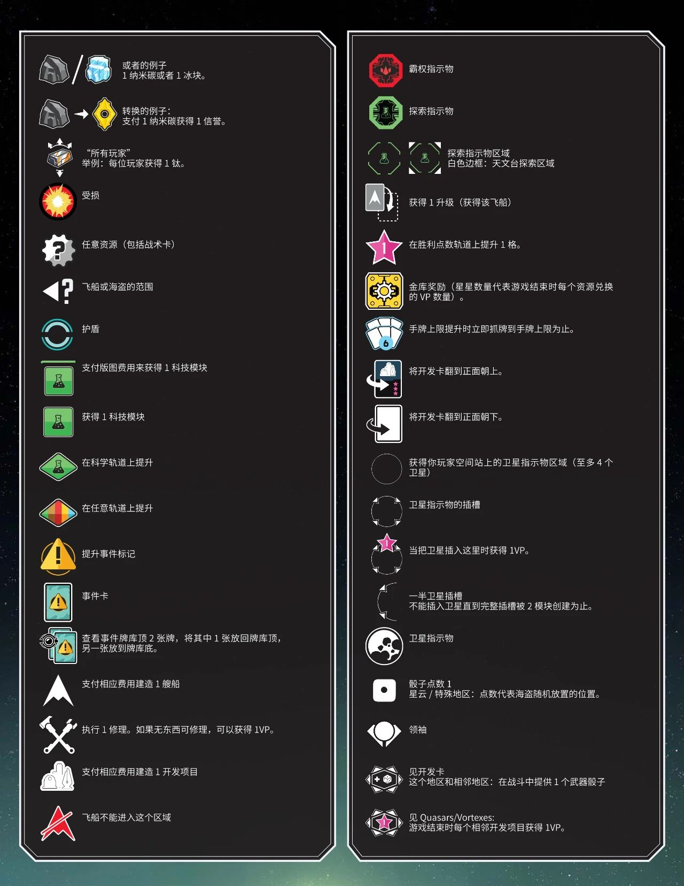